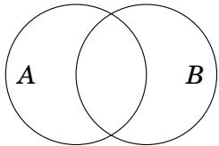
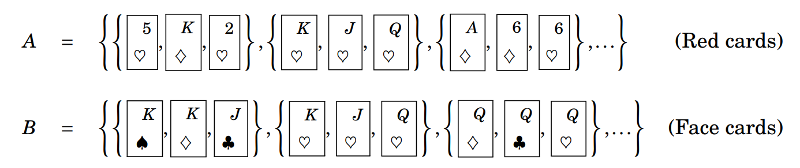
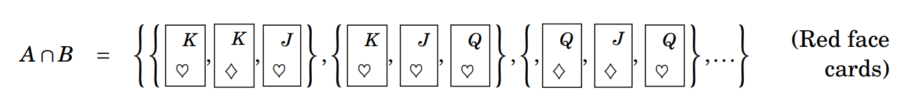
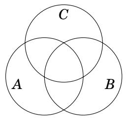

3.7 The Inclusion-Exclusion Principle¶
Many counting problems involve computing the cardinality of a union \(A \cup B\) of two finite sets. We examine this kind of problem now. First we develop a formula for \(|A \cup B|\). It is tempting to say that \(|A \cup B|\) must equal \(|A| + |B|\), but that is not quite right. If we count the elements of \(A\) and then count the elements of \(B\) and add the two figures together, we get \(|A| + |B|\). But if \(A\) and \(B\) have some elements in common, then we have counted each element in \(A \cap B\) twice.

Therefore \(|A| + |B|\) exceeds \(|A \cup B|\) by \(|A \cap B|\), and consequently \(|A \cup B| = |A| + |B| - |A \cap B|\). This can be a useful equation.
Fact 3.6: (Inclusion-Exclusion Formula) If \(A\) and \(B\) are finite sets, then \(|A \cup B| = |A| + |B| - |A \cap B|\).
Notice that the sets \(A\), \(B\) and \(A \cap B\) are all generally smaller than \(A \cup B\), so Fact 3.6 has the potential of reducing the problem of determining \(|A \cup B|\) to three simpler counting problems. It is called the inclusion-exclusion formula because elements in \(A \cap B\) are included (twice) in \(|A| + |B|\), then excluded when \(|A \cap B|\) is subtracted. Notice that if \(A \cap B = \varnothing\), then we do in fact get \(|A \cup B| = |A| + |B|\). (This is an instance of the addition principle!) Conversely, if \(|A \cup B| = |A| + |B|\), then it must be that \(A \cap B = \varnothing\).
Example 3.17: A 3-card hand is dealt off of a standard 52-card deck. How many different such hands are there for which all three cards are red or all three cards are face cards?
Solution: Let \(A\) be the set of 3-card hands where all three cards are red (i.e., either \(\heartsuit\) or \(\diamondsuit\)). Let \(B\) be the set of 3-card hands in which all three cards are face cards (i.e., \(J\), \(Q\) or \(K\) of any suit). These sets are illustrated below.
{kind=link}

We seek the number of 3-card hands that are all red or all face cards, and this number is \(|A \cup B|\). By Fact 3.6, \(|A \cup B| = |A| + |B| - |A \cap B|\). Let’s examine \(|A|, |B|\) and \(|A \cap B|\) separately. Any hand in \(A\) is formed by selecting three cards from the 26 red cards in the deck, so \(\displaystyle |A| = \binom{26}{3}\). Similarly, any hand in \(B\) is formed by selecting three cards from the 12 face cards in the deck (\(4J + 4Q + 4K\)), so \(\displaystyle |B| = \binom{12}{3}\). Now think about \(A \cap B\). It contains all the 3-card hands made up of cards that are red face cards.
{kind=link}

The deck has only 6 red face cards, so \(\displaystyle |A \cap B| = \binom{6}{3}\). Now we can answer our question. The number of 3-card hands that are all red or all face cards is \(\displaystyle |A \cup B| = |A| + |B| - |A \cap B| = \binom{26}{3} + \binom{12}{3} - \binom{6}{3} = 2600 + 220 - 20 = 2800\).
Example 3.18: A 3-card hand is dealt off of a standard 52-card deck. How many different such hands are there for which it is not the case that all 3 cards are red or all three cards are face cards?
Solution: We will use the subtraction principle combined with our answer to Example 3.17, above. The total number of 3-card hands is \(\displaystyle \binom{52}{3} = \dfrac{52!}{3! \cdot (52-3)!} = \dfrac{52!}{3! \cdot 49!} = \dfrac{52 \cdot 51 \cdot 50}{3!} = 26 \cdot 17 \cdot 50 = 22,100\). To get our answer, we must subtract from this the number of 3-card hands that are all red or all face cards, that is, we must subtract the answer from Example 3.17. Thus the answer to our question is \(22,100 - 2800 = 19,300\).
There is an analogue of Fact 3.6 that involves three sets. Consider three sets \(A\), \(B\) and \(C\), as represented in the following Venn Diagram.

Using the same kind of reasoning that resulted in Fact 3.6, you can convince yourself that
Note in \(|A| + |B| + |C|\) that any element that is common to 2 sets is counted twice, and that any element that is common to all 3 sets is counted 3 times! As such, each pairwise, triple, quadruple, etc. intersection corrects the previous step, and that is why the sign alternates, i.e.: the \(- |A \cap B| - |A \cap C| - |B \cap C|\) pairwise intersections exclude all of the elements that were included twice, while \(+ |A \cap B \cap C|\) includes again all the elements from the triple intersection that were excluded in the previous step.
There’s probably not much harm in ignoring this one for now, but if you find this kind of thing intriguing you should definitely take a course in combinatorics. (Ask your instructor!)
Exercises for Section 3.7¶
At a certain university 523 of the seniors are history majors or math majors (or both). There are 100 senior math majors, and 33 seniors are majoring in both history and math. How many seniors are majoring in history?
Answer
Let \(A\) be the set of senior math majors and \(B\) be the set of senior history majors. From \(|A \cup B| = |A| + |B| - |A \cap B|\) we get \(523 = 100 + |B| - 33\), so \(|B| = 523 + 33 - 100 = 456\). There are 456 history majors.
How many 4-digit positive integers are there for which there are no repeated digits, or for which there may be repeated digits, but all digits are odd?
Answer
Let \(A\) be the set of 4-digit positive integers for which there are no repeated digits, and let \(B\) be the set of 4-digit positive integers for which there may be repeated digits, but all digits are odd. We seek \(|A \cup B|\). By the multiplication principle \(|A| = 9 \cdot 9 \cdot 8 \cdot 7 = 4536\). (Note the first digit cannot be 0.) Also \(|B| = 5 \cdot 5 \cdot 5 \cdot 5 = 625\). Further, \(A \cap B\) consists of all 4-digit positive integers for which there are no repeated digits and all digits are odd. It follows that \(|A \cap B| = 5 \cdot 4 \cdot 3 \cdot 2 = 120\). Then the answer to our question is \(|A \cup B| = |A| + |B| - |A \cap B|= 4536 + 625 - 120 = 5041\).
How many 4-digit positive integers are there that are even or contain no 0’s? 🔴
Answer
Let \(A\) be the set of 4-digit even positive integers, and let \(B\) be the set of 4-digit positive integers that contain no 0’s. We seek \(|A \cup B|\). By the multiplication principle \(|A| = 9 \cdot 10 \cdot 10 \cdot 5 = 4500\). (Note the first digit cannot be 0 and the last digit must be even. Also note that \(10000 \div 2 = 5000\) is not correct here, because it also counts the NON-4-digit even numbers!) Also \(|B| = 9 \cdot 9 \cdot 9 \cdot 9 = 6561\). Further, \(A \cap B\) consists of all even 4-digit integers that have no 0’s. It follows that \(|A \cap B| = 9 \cdot 9 \cdot 9 \cdot 4 = 2916\). Then the answer to our question is \(|A \cup B| = |A| + |B| - |A \cap B|= 4500 + 6561 - 2916 = 8145\).
This problem involves lists made from the letters \(T , H , E , O , R , Y\), with repetition allowed. (a) How many 4-letter lists are there that don’t begin with \(T\), or don’t end in \(Y\)? 🔴
Answer
Let \(A\) be the set of 4-letter lists that don’t begin with \(T\), and let \(B\) be the set of 4-letter lists that don’t end in \(Y\). We seek \(|A \cup B|\). By the multiplication principle \(|A| = 5 \cdot 6 \cdot 6 \cdot 6 = 1080\). Also \(|B| = 6 \cdot 6 \cdot 6 \cdot 5 = 1080\). Further, \(A \cap B\) consists of all 4-letter lists that don’t begin with \(T\) AND don’t end in \(Y\). It follows that \(|A \cap B| = 5 \cdot 6 \cdot 6 \cdot 5 = 900\). Then the answer to our question is \(|A \cup B| = |A| + |B| - |A \cap B|= 1080 + 1080 - 900 = 1260\).
(b) How many 4-letter lists are there in which the sequence of letters \(T , H , E\) appears consecutively (in that order)?
Answer
The 4-letter lists we want to make can be divided into 2 types. They have the forms:
\(A_{1}\) :
T H E *\(A_{2}\) :
* T H E
where * indicates any letter from the set \(\{T , H , E , O , R , Y\}\). By the multiplication principle, there are \(|A_{1}| = 1 \cdot 1 \cdot 1 \cdot 6 = 6\) lists of form T H E *. Similarly there are \(|A_{2}| = 6 \cdot 1 \cdot 1 \cdot 1 = 6\) lists of form * T H E. Thus by the addition principle, the answer to the question is \(|A| = |A_{1}| + |A_{2}| = 6 + 6 = 12\).
(c) How many 6-letter lists are there in which the sequence of letters \(T, H, E\) appears consecutively (in that order)?
Answer
The 6-letter lists we want to make can be divided into 4 types. They have the forms:
\(A_{1}\) :
T H E * * *\(A_{2}\) :
* T H E * *\(A_{3}\) :
* * T H E *\(A_{4}\) :
* * * T H E
where * indicates any letter from the set \(\{T , H , E , O , R , Y\}\). By the multiplication principle, there are \(|A_{1}| = 1 \cdot 1 \cdot 1 \cdot 6 \cdot 6 \cdot 6 = 216\) lists of form T H E * * *. Similarly there are \(|A_{2}| = |A_{3}| = |A_{4}| = 216\) lists of the other forms. Thus by the addition principle, the answer to the question is \(|A| = |A_{1}| + |A_{2}| + |A_{3}| + |A_{4}| = 4 \cdot 216 = 864\).
How many 7-digit binary strings begin in 1 or end in 1 or have exactly four 1’s? 🔴
Answer
Let \(A\) be the set of such strings that begin in 1. Let \(B\) be the set of such strings that end in 1. Let \(C\) be the set of such strings that have exactly four 1’s. Then the answer to our question is \(|A \cup B \cup C|\). Using Equation (3.5) to compute this number, we have \(\displaystyle |A \cup B \cup C| = |A| + |B| + |C| - |A \cap B| - |A \cap C| - |B \cap C| + |A \cap B \cap C| = 2^{6} + 2^{6} + \binom{7}{4} - 2^{5} - \binom{6}{3} - \binom{6}{3} + \binom{5}{2} = 64 + 64 + 35 - 32 - 20 - 20 + 10 = 101\). Note that \(|C| = \displaystyle \binom{7}{4}\) counts the number of 7-digit binary strings that have exactly four 1’s (order does not matter): we choose 4 positions out of 7 for placing the 1’s, and the remaining positions are automatically filled with 0’s. Likewise \(|A \cap C| = |B \cap C| = \displaystyle \binom{6}{3}\): we choose 3 out of 6 positions for placing the 1’s, because the 1 in the first position (in the case of \(A\)) OR the 1 in the last position (in the case of \(B\)) is already fixed. \(|A \cap B \cap C| = \displaystyle \binom{5}{2}\): we choose 2 out of 5 positions for placing the 1’s, because the 1 in the first position AND the 1 in the last position is already fixed.
Is the following statement true or false? Explain. If \(A_{1} \cap A_{2} \cap A_{3} = \varnothing\), then \(| A_{1} \cup A_{2} \cup A_{3} | = | A_{1} | + | A_{2} | + | A_{3} |\). 🔴
Answer
This statement is false. By Equation (3.5), we have: \(|A \cup B \cup C| = |A| + |B| + |C| - |A \cap B| - |A \cap C| - |B \cap C| + |A \cap B \cap C|\). Even if the triple intersection \(|A \cap B \cap C|\) is empty, then the same pairwise intersections \(|A \cap B|\), \(|A \cap C|\), or \(|B \cap C|\) may still be non-empty! If there is no element that is common to all 3 sets, that does not say anything about any elements that are common to 2 of the 3 sets. Take the counterexample: let \(A = \{1\}\), \(B = \{1\}\), and \(C = \{2\}\), then \(A \cap B \cap C = \varnothing\), but \(A \cap B = \{1\}\). Note that the other way around is always true: if all pairwise intersections are empty \(A_{1} \cap A_{2} = A_{1} \cap A_{3} = A_{2} \cap A_{3} = \varnothing\), then the triple intersection must always be empty as well \(A_{1} \cap A_{2} \cap A_{3} = \varnothing\) and thus it follows that \(| A_{1} \cup A_{2} \cup A_{3} | = | A_{1} | + | A_{2} | + | A_{3} |\). This is always true, because \((A \cap B \cap C) \subseteq (A \cap B)\), but not the other way around: \((A \cap B) \not \subseteq (A \cap B \cap C)\).
Consider 4-card hands dealt off of a standard 52-card deck. How many hands are there for which all 4 cards are of the same suit or all 4 cards are red? 🔴
Answer
Let \(A\) be the set of 4-card hands for which all four cards are of the same suit. Let \(B\) be the set of 4-card hands for which all four cards are red. Then \(A \cap B\) is the set of 4-card hands for which the four cards are either all hearts or all diamonds. The answer to our question is \(\displaystyle |A \cup B| = |A| + |B| - |A \cap B| = 4 \cdot \binom{13}{4} + \binom{26}{4} - 2 \cdot \binom{13}{4} = 2 \cdot \binom{13}{4} + \binom{26}{4} = 1430 + 14,950 = 16,380\). Note that \(\displaystyle |A| = 4 \cdot \binom{13}{4}\), as there are \(\displaystyle \binom{13}{4}\) ways to choose 4 cards from the same suit (each suit has 13 cards), and there are 4 suits in a standard deck of cards. \(\displaystyle |B| = \binom{26}{4}\), as there are \(\displaystyle \binom{26}{4}\) ways to choose 4 cards out of all red cards (there are 26 red cards in a standard deck of cards). \(\displaystyle |A \cap B| = 2 \cdot \binom{13}{4}\), as there are \(\displaystyle \binom{13}{4}\) ways to choose 4 cards from the same suit (each suit has 13 cards), and there are 2 red suits in a standard deck of cards.
Consider 4-card hands dealt off of a standard 52-card deck. How many hands are there for which all 4 cards are of different suits or all 4 cards are red?
Answer
Let \(A\) be the set of 4-card hands for which all four cards are of differerent suits. \(|A| = 13 \cdot 13 \cdot 13 \cdot 13 = 13^{4} = 28,561\). Let \(B\) be the set of 4-card hands for which all four cards are red. \(\displaystyle |B| = \binom{26}{4} = 14,950\). Then \(A \cap B\) is the set of 4-card hands for which all four cards are from different suits AND all four cards are red. \(A \cap B = \varnothing\), so \(|A \cap B| = 0\) (a four-card hand cannot have both all four cards from different suits AND have all four cards be red, because only hearts and diamonds are red). The answer to our question is \(\displaystyle |A \cup B| = |A| + |B| - |A \cap B| = 13^{4} + \binom{26}{4} - 0 = 28,561 + 14,950 = 43,511\).
A 4-letter list is made from the letters \(L , I , S , T , E , D\) according to the following rule: Repetition is allowed, and the first two letters on the list are vowels or the list ends in \(D\). How many such lists are possible? 🔴
Answer
Note that repetition is allowed. Let \(A\) be the set of such 4-letter lists for which the first two letters are vowels, so \(|A| = 2 \cdot 2 \cdot 6 \cdot 6 = 144\). Let \(B\) be the set of such 4-letter lists that end in \(D\), so \(|B| = 6 \cdot 6 \cdot 6 \cdot 1 = 216\). Then \(A \cap B\) is the set of such 4-letter lists for which the first two entries are vowels and the list ends in \(D\). Thus \(|A \cap B| = 2 \cdot 2 \cdot 6 \cdot 1 = 24\). The answer to our question is \(|A \cup B| = |A| + |B| - |A \cap B| = 144 + 216 - 24 = 336\).
How many 6-digit numbers are even or are divisible by 5?
Answer
Let \(A\) be the set of 6-digit numbers that are even, and let \(B\) be the set of 6-digit that are divisible by 5. We seek \(|A \cup B|\). By the multiplication principle \(|A| = 9 \cdot 10 \cdot 10 \cdot 10 \cdot 10 \cdot 5 = 450,000\) (note the first digit cannot be 0 and the last digit must be even. Even means that the last digit is one of: \(\{0,2,4,6,8\}\). Also note that \(1,000,000 \div 2 = 500,000\) is not correct here, because it also counts the NON-6-digit even numbers!). \(|B| = 9 \cdot 10 \cdot 10 \cdot 10 \cdot 10 \cdot 2 = 180,000\) (note the first digit cannot be 0 and the last digit must be divisible by 5, which means that the last digit is one of: \(\{0,5\}\)). Further, \(A \cap B\) consists of all 6-digit numbers that are even and divisible by 5. It follows that \(|A \cap B| = 9 \cdot 10 \cdot 10 \cdot 10 \cdot 10 \cdot 1 = 90,000\) (note the first digit cannot be 0 and the last digit must be even AND divisible by 5, which means that the last digit can only be: \(\{0\}\)). Then the answer to our question is \(|A \cup B| = |A| + |B| - |A \cap B|= 450,000 + 180,000 - 90,000 = 540,000\).
How many 7-digit numbers are even or have exactly three digits equal to 0? 🔴
Answer
Let \(A\) be the set of 7-digit numbers that are even. By the multiplication principle, \(|A| = 9 \cdot 10 \cdot 10 \cdot 10 \cdot 10 \cdot 10 \cdot 5 = 4,500,000\) (note that the first digit cannot be 0 and the last digit must be even. Even means that the last digit is one of: \(\{0,2,4,6,8\}\). Also note that \(10,000,000 \div 2 = 5,000,000\) is not correct here, because it also counts the NON-7-digit even numbers!). Let \(B\) be the set of 7-digit numbers that have exactly three digits equal to 0. Then \(\displaystyle |B| = 9 \cdot \binom{6}{3} \cdot 9 \cdot 9 \cdot 9\) (note that the first digit is anything but 0. Then choose 3 of 6 of the remaining places in the number for the 0’s. Finally the remaining 3 places can be anything but 0.) Note \(A \cap B\) is the set of 7-digit numbers that are even AND contain exactly three 0’s. We can compute \(|A \cap B|\) with the addition principle, by dividing \(A \cap B\) into two parts: the even 7-digit numbers with three digits 0 and the last digit is not 0, and the even 7-digit numbers with three digits 0 and the last digit is 0. The first part has \(\displaystyle 9 \cdot \binom{5}{3} \cdot 9 \cdot 9 \cdot 4\) elements. The second part has \(\displaystyle 9 \cdot \binom{5}{2} \cdot 9 \cdot 9 \cdot 9 \cdot 1\) elements. Thus \(\displaystyle |A \cap B| = 9 \cdot \binom{5}{3} \cdot 9 \cdot 9 \cdot 4 + 9 \cdot \binom{5}{2} \cdot 9 \cdot 9 \cdot 9\). By the inclusion-exclusion formula, the answer to our question is \(\displaystyle |A \cup B| = |A| + |B| - |A \cap B| = 4,500,000 + 9^{4} \binom{6}{3} - 9^{3} \binom{5}{3} \cdot 4 - 9^{4} \binom{5}{2} = 4,536,450\).
How many 5-digit numbers are there in which three of the digits are 7, or two of the digits are 2?
Answer
Let \(A\) be the set of 5-digit numbers in which three of the digits are 7. We can compute \(|A|\) with the addition principle, by dividing \(A\) into two parts: the 5-digit numbers with three of the digits equal to 7 and the first digit is not 7 (\(A_{1}\)), and the 5-digit numbers with three of the digits equal to 7 and the first digit is 7 (\(A_{2}\)). \(\displaystyle |A_{1}| = 8 \cdot \binom{4}{3} \cdot 9 = 288\) elements (note that the first position cannot be 0 and cannot be 7; we choose 3 positions out of the 4 positions left to put 7’s; the remaining position cannot be 7). \(\displaystyle |A_{2}| = 1 \cdot \binom{4}{2} \cdot 9 \cdot 9 = 486\) elements (note that the first position is 7; we choose 2 positions out of the 4 positions left to put 7’s; the remaining positions cannot be 7). Thus \(\displaystyle |A| = |A_{1}| + |A_{2}| = 288 + 486 = 774\). Let \(B\) be the set of 5-digit numbers in which two of the digits are 2. We can compute \(|B|\) with the addition principle, by dividing \(B\) into two parts: the 5-digit numbers with two of the digits equal to 2 and the first digit is not 2 (\(B_{1}\)), and the 5-digit numbers with two of the digits equal to 2 and the first digit is 2 (\(B_{2}\)). \(\displaystyle |B_{1}| = 8 \cdot \binom{4}{2} \cdot 9 \cdot 9 = 3888\) elements (note that the first position cannot be 0 and cannot be 2; we choose 2 positions out of the 4 positions left to put 2’s; the remaining positions cannot be 2). \(\displaystyle |B_{2}| = 1 \cdot \binom{4}{1} \cdot 9 \cdot 9 \cdot 9 = 2916\) elements (note that the first position is 2; we choose 1 position out of the 4 positions left to put a 2; the remaining positions cannot be 2). Thus \(\displaystyle |B| = |B_{1}| + |B_{2}| = 3888 + 2916 = 6804\). Note \(A \cap B\) is the set of 5-digit numbers that have three of the digits equal to 7 AND two of the digits equal to 2. \(\displaystyle |A \cap B| = \binom{5}{3} \cdot \binom{2}{2} = \binom{5}{2} \cdot \binom{3}{3} = 10\) elements. By the inclusion-exclusion formula, the answer to our question is \(\displaystyle |A \cup B| = |A| + |B| - |A \cap B| = 774 + 6804 - 10 = 7568\).
How many 8-digit binary strings end in 1 or have exactly four 1’s? 🔴
Answer
Let \(A\) be the set of strings that end in 1. By the multiplication principle \(|A| = 2 \cdot 2 \cdot 2 \cdot 2 \cdot 2 \cdot 2 \cdot 2 \cdot 1 = 2^{7}\). Let \(B\) be the number of strings with exactly four 1’s. Then \(\displaystyle |B| = \binom{8}{4}\) because we can make such a string by choosing 4 of 8 spots for the 1’s and automatically filling the remaining spots with 0’s (there are no other choices than 0). Then \(A \cap B\) is the set of strings that end with 1 and have exactly four 1’s. Note that \(\displaystyle |A \cap B| = \binom{7}{4} \cdot 1\) (make the last entry a 1 and choose 3 of the remaining 7 spots to fill with 1’s). By the inclusion-exclusion formula, the 8-digit binary strings that end in 1 or have exactly four 1’s is \(\displaystyle |A \cup B| = |A| + |B| - |A \cap B| = 2^{7} + \binom{8}{4} - \binom{7}{3} = 163\).
How many 3-card hands (from a standard 52-card deck) have the property that it is not the case that all cards are black or all cards are of the same suit?
Answer
Let \(U\) be the universal set of all possible 3-card hands. \(\displaystyle |U| = \binom{52}{3} = \frac{52 \cdot 51 \cdot 50 \cdot 49!}{3! \cdot 49!} = 22,100\). Let \(A\) be the set 3-card hands that have all cards black. \(\displaystyle |A| = \binom{26}{3} = \frac{26 \cdot 25 \cdot 24 \cdot 23!}{3! \cdot 23!} = 2600\). Let \(B\) be the set 3-card hands that have all cards of the same suit (note that there are 4 suits in a standard deck of cards). \(\displaystyle |B| = 4 \cdot \binom{13}{3} = 4 \cdot \frac{13 \cdot 12 \cdot 11 \cdot 10!}{3! \cdot 10!} = 4 \cdot 286 = 1144\). \(A \cap B\) is the set of 3-card hands that have all cards black AND all cards of the same suit (note that there are 2 black suits in a standard deck of cards: spades and clubs). \(\displaystyle |A \cap B| = 2 \cdot \binom{13}{3} = 2 \cdot \frac{13 \cdot 12 \cdot 11 \cdot 10!}{3! \cdot 10!} = 2 \cdot 286 = 572\). By the inclusion-exclusion formula, the set of 3-card hands that have all cards black OR all cards of the same suit is \(\displaystyle |A \cup B| = |A| + |B| - |A \cap B| = 2600 + 1144 - 572 = 3172\). By taking the complement of \(A \cup B\), we get the set of 3-card hands that have the property that it is not the case that all cards are black or all cards are of the same suit: \(\displaystyle |\overline{A \cup B}| = |U| - |A \cup B| = 22,100 - 3172 = 18,928\).
How many 10-digit binary strings begin in 1 or end in 1?
Answer
Let \(A\) be the set of strings that begin with 1. By the multiplication principle \(|A| = 1 \cdot 2 \cdot 2 \cdot 2 \cdot 2 \cdot 2 \cdot 2 \cdot 2 \cdot 2 \cdot 2 = 2^{9}\). Let \(B\) be the number of strings that end with 1. By the multiplication principle \(|B| = 2 \cdot 2 \cdot 2 \cdot 2 \cdot 2 \cdot 2 \cdot 2 \cdot 2 \cdot 2 \cdot 1 = 2^{9}\). Then \(A \cap B\) is the set of strings that begin and end with 1. By the multiplication principle \(|A \cap B| = 1 \cdot 2 \cdot 2 \cdot 2 \cdot 2 \cdot 2 \cdot 2 \cdot 2 \cdot 2 \cdot 1 = 2^{8}\). By the inclusion-exclusion formula, the number 10-digit binary strings begin in 1 or end in 1 is \(|A \cup B| = |A| + |B| - |A \cap B| = 2^{9} + 2^{9} - 2^{8} = 768\).